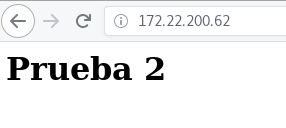

docker
"Build, Ship and Run. Any application, Anywhere"
Alberto Molina Coballes, José Luis Rodríguez Rodríguez and José Domingo Muñoz Rodríguez
Cloud Computing in European schools. Project: 2017-1-ES01-KA202-038471


Theme by: reveal.js
Docker
- Lightweight virtualization: we make better use of the hardware
and only need the minimum file system for the services to
work.
- Containers are self-sufficient, we only need one image to
create containers.
- A Docker image can be understood as "an Operating System with
installed applications".
- The project offers us a repository of images: Registry Docker
Hub that allows us to manage images.
- A container usually runs only one service. An application
usually needs the execution of several containers that work
together.
Docker main components
- Docker Engine: It is a daemon that runs on any
Linux distribution and that exposes an external API for the
management of images and containers.
- Docker Client: It is the command line client
(CLI) that allows us to manage the Docker Engine. The docker
client can be configured to work with a local or remote Docker
Engine.
- Docker Registry: The purpose of this
component is to store the images generated by the Docker
Engine. It allows us to distribute our images. We can install a
private registry, or make use of a public one such as Docker
Hub.
The life cycle of docker based applications
Step 1: Development of the application
In this example we are going to develop a web page that will be
served by a web server that will run in a Docker container.
So the first thing we need to do is create our web page:
$ cd public_html
echo "<h1>Prueba</h1>" > index.html
Step 2: Creating the Docker image
Using a Dockerfile we define how we are going to create our
image:
- Which base image we are going to use.
- Which packages we are going to install
- Where we copy our source code (web page)
- We indicate the service that will run the container (apache
server)
Paso 2: Creación de la imagen Docker
Dockerfile
FROM debian
RUN apt-get update -y && apt-get install -y \
apache2 \
&& apt-get clean && rm -rf /var/lib/apt/lists/*
COPY ./public_html /var/www/html/
ENTRYPOINT ["/usr/sbin/apache2ctl", "-D", "FOREGROUND"]
Podríamos usar una imagen base con apache2 ya instalado:
FROM httpd:2.4
COPY ./public_html /usr/local/apache2/htdocs/
Paso 2: Creación de la imagen Docker
Creamos nuestra imagen, desde el directorio donde tenemos el Dockerfile, ejecutamos:
$ docker build -t josedom24/aplicacionweb:v1 .
Sending build context to Docker daemon 3.584kB
Step 1/4 : FROM debian
---> be2868bebaba
Step 2/4 : RUN apt-get update -y && apt-get install -y apache2 & apt-get clean && rm -rf /var/lib/apt/lists/*
...
Successfully built 518871c9fc0c
Successfully tagged josedom24/aplicacionweb:v1
Paso 2: Creación de la imagen Docker
Podemos comprobar que en nuestro entorno local tenemos la imagen que acabamos de crear:
$ docker image ls
REPOSITORY TAG IMAGE ID CREATED SIZE
josedom24/aplicacionweb v1 b2e0df215145 7 seconds ago 204MB
debian latest be2868bebaba 10 days ago 101MB
Paso 3: Probamos nuestra aplicación en el entorno de desarrollo
Creamos un contenedor en nuestro entorno de desarrollo:
$ docker run --name aplweb -d -p 80:80 josedom24/aplicacionweb:v1
fbdd73529e2bb2d9ee9c6415031513741688e6d38509572251f5b624ed7dc23f
$ docker container ls
CONTAINER ID IMAGE COMMAND CREATED STATUS PORTS NAMES
fbdd73529e2b josedom24/aplicacionweb:v1 "/usr/sbin/apache2ct…" 6 seconds ago Up 5 seconds 0.0.0.0:80->80/tcp aplweb
Paso 3: Probamos nuestra aplicación en el entorno de desarrollo
Probamos nuestra aplicación:

Paso 4: Distribuimos nuestra imagen
Vamos a subir nuestra imagen al registro Docker Hub:
$ docker login
...
$ docker push josedom24/aplicacionweb:v1
The push refers to repository [docker.io/josedom24/aplicacionweb]
ac126159496f: Pushed
cc15ec5f0c43: Pushed
...
Comprobamos que está subida al repositorio:
$ docker search josedom24/aplicacionweb
NAME DESCRIPTION...
josedom24/aplicacionweb:v1
Paso 5:Implantación de la aplicación
En el el entorno de producción, bajamos la imagen de Docker Hub y creamos el contenedor:
$ docker pull josedom24/aplicacionweb:v1
v1: Pulling from josedom24/aplicacionweb
9a029d5ca5bb: Pull complete
...
$ docker run --name aplweb_prod -d -p 80:80 josedom24/aplicacionweb:v1
Paso 6: Modificación de la aplicación
Al modificar el código de la aplicación tenemos que generar una nueva imagen.
$ cd public_html
echo "<h1>Prueba 2</h1>" > index.html
$ docker build -t josedom24/aplicacionweb:v2 .
Podemos probarla en el entorno de desarrollo, eliminando el contenedor anterior:
$ doker container rm -f aplweb
$ docker run --name aplweb2 -d -p 80:80 josedom24/aplicacionweb:v2

Paso 6: Modificación de la aplicación
Subimos la nueva versión de la aplicación. En el entorno de producción: bajamos la nueva versión, eliminamos el contenedor de la versión antigua y creamos un nuevo contenedor con la nueva imagen:
$ docker push josedom24/aplicacionweb:v1
...
En producción:
$ docker pull josedom24/aplicacionweb:v2
...
$ doker container rm -f aplweb_prod
$ docker run --name aplweb2_prod -d -p 80:80 josedom24/aplicacionweb:v2
Construir aplicaciones sin estado(Stateless)
- Una aplicación sin estado(Stateless) es aquella que no guarda ninguna información. Se ejecuta, hace su trabajo y se elimina.
- Una aplicación con estado (Stateful) es aquella que necesita guardar información para su funcionamiento.
- Si creo una aplicación desde 0 debería construirla sin estado
- La mayoría de las aplicaciones actuales son Stateful.
Uso de volúmenes persistentes
- La información que se guarda en un contenedor no es persistente.
- Los contenedores que implementan aplicaciones Stateful deben guardar los datos en un medio de almacenamiento persistente. Desacoplamos la aplicación de los datos.
- Con docker podemos gestionar volúmenes de datos, que nos permiten guardar la información en el host (almacenamiento persistente).
Ventajas de guardar los datos en almacenamiento persistente
- Los contenedores son más livianos.
- Puedo tener datos distintos en los distintos entornos de desarrollo.
- Si un contenedor falla, no se pierde información sólo tengo que crear un nuevo contenedor.
- La modificación de los datos de la aplicación no conlleva la construcción de una nueva imagen.
Ejemplo de almacenamiento persistente
Contenedor con mysql. guardamos la información de la base de datos en un volumen persistente:
$ docker run --name some-mysql \
-v /opt/mysql:/var/lib/mysql \
-e MYSQL_ROOT_PASSWORD=asdasd \
-d mysql
Comprobamos que se ha guardado la BD en el host:
/opt/mysql$ ls
ibdata1 ib_logfile0 ib_logfile1 ibtmp1 #innodb_temp mysql mysql.ibd undo_001 undo_002
Ejemplo de almacenamiento persistente
Creamos una base de datos:
$ docker exec -it some-mysql bash
root@75544a024f9b:/# mysql -u root -p -h localhost
...
create database dbtest;
Query OK, 1 row affected (0.07 sec)
Nuestro contenedor falla!!!
$ docker container rm -f some-mysql
Ejemplo de almacenamiento persistente
Podemos crear otro contenedor y comprobar como sigue existiendo la BD:
$ docker run --name some-mysql2 \
-v /opt/mysql:/var/lib/mysql \
-e MYSQL_ROOT_PASSWORD=asdasd \
-d mysql
$ docker exec -it some-mysql2 bash
root@878f77d80fcf:/# mysql -u root -p -h localhost
...
show databases;
...
| dbtest |
...